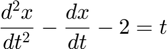

3) Finite Differences - Ex4
Introduction
The following code implements the Finite Difference Method of solving boundary value problems (BVP) for ordinary differential equations (ODE). This method differs from previous methods in that rather than knowing the initial conditions for the ODE we know the value at the start and end of an interval. BVP problems do not always have a solution, however for those that do one method of solving them is using finite differences.
%*Mathematics Involved* % % The finite differences method splits the interval into steps and uses % these steps to obtain estimates for the first and second derivative which % are: % % $$\frac{dx}{dt} = \frac{u_{i+1} - u_{i-1}}{2h}$ % % $$\frac{d^2x}{dt^2} = \frac{u_{i+1} - 2u_i + u_{i-1}}{h^2}$ % % where $$u_i = x(t_i)$ % % Substituting these into the differential equations allows us to obtain an % equation in $$u_i , u_{i-1} , u_{i+1}$ which can be used to calculate % the value of x at each step in the interval based on the boundary % conditions.
The finite_script() function encapsulates the entire procedure
function finite_script()
The function run_finite_diff() runs takes the initial parameters as arguments and implements finite differences returning the estimated x and t values
function [x,t] = run_finite_diff (i_h, i_A, i_B, i_C, i_t0, i_tf, i_x0, i_xf, forcing_function)
Set Up Setting up the initial values for the finite-differences method based on input arguments
h = i_h; %Width of each sub interval A = i_A; %Coefficient of x" B = i_B; %Coefficient of x' C = i_C; %Coefficient of x t0 = i_t0; tf = i_tf; %Interval on x-axis x0 = i_x0; xf = i_xf; %Initial values at boundaries func=forcing_function; %forcing function
Calculate variables
t = t0:h:tf; %Time vector, increasing from t0 to tf by width h N = round((tf-t0)/h); %Number of iterations taken to calculate estimate
Evaluate a, b and c, where:_a_ is the coefficent of , b is the coefficient of , c is the coefficient of
a = (A/(h*h))-(B/(2*h));
b = C-((2*A)/(h*h));
c = (A/(h*h))+(B/(2*h));
Assemble vector vec which is the right hand side vector
vec = zeros(N-1,1); %Column vector with N-1 rows for i = 1:N-1 vec(i) = func(i); %Vector contents initialised to func(t) value end
Set first and last values of vec as boundary conditions are already known
vec(1) = vec(1)-(a*x0);
vec(N-1) = vec(N-1)-(c*xf);
Use solvetridiag function to obtain y-axis values
y = solvetridiag(N-1,a,b,c,vec);
x = [x0;y;xf]; %Append boundary conditions to y-axis values
end
Plot graphs Reaction-diffusion equation (h = 0.2)
with boundary conditions :
figure(1); [x,t] = run_finite_diff(0.2,1,-20,0,0,1,1,0,@(t) -1); plot(t,x, 'b*'); title('Reaction-diffusion equation (h=0.2)'); xlabel('Time t (s)'), ylabel('Output x');
Reaction-diffusion equation (h = 0.02)
with boundary conditions :
figure(2); [x,t] = run_finite_diff(0.02,1,-20,0,0,1,1,0,@(t) -1); plot(t,x, 'b*'); title('Reaction-diffusion equation (h=0.02)'); xlabel('Time t (s)'), ylabel('Output x');
Reaction-diffusion equation (h = 0.002)
with boundary conditions :
figure(3); [x,t] = run_finite_diff(0.002,1,-20,0,0,1,1,0,@(t) -1); plot(t,x, 'b*'); title('Reaction-diffusion equation (h=0.002)'); xlabel('Time t (s)'), ylabel('Output x');
Arbitrary BVP (h = 0.01)

with boundary conditions :
figure(4); [x,t] = run_finite_diff(0.01,1,-1,-2,0,1,1,2,@(t) t); plot(t,x, 'b*'); title('Arbitrary BVP (h=0.01)'); xlabel('Time t (s)'), ylabel('Output x');
end